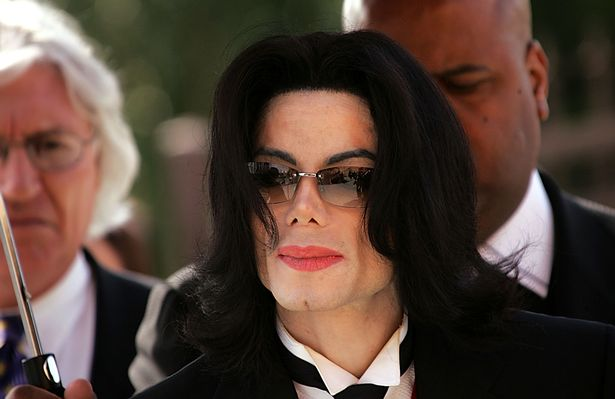
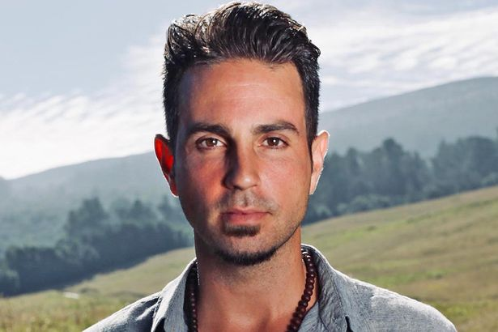
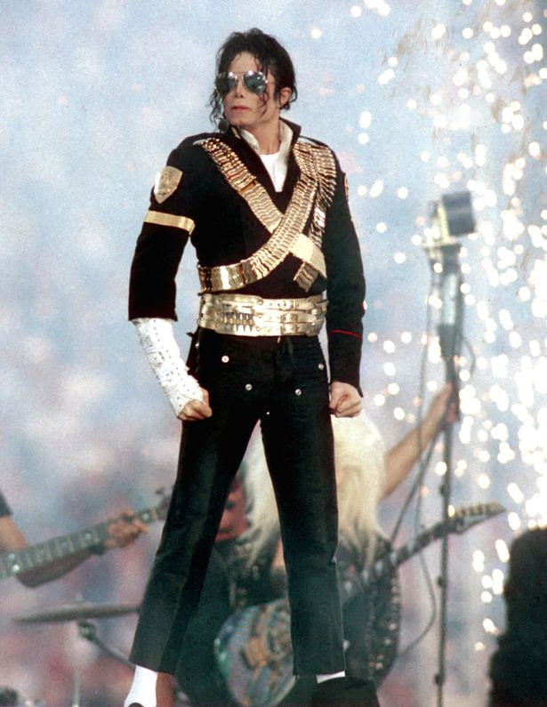

The damning documentary Leaving Neverland by filmmaker Dan Reed has divided opinion as it exposed legendary singer Michael Jackson as a predatory child sex offender. With testimony by Wade Robson and James Safechuck about their childhood in the presence of Jacko, it paints a grim picture of persistent abuse, that could have been repeated with a host of children between the ages of seven and 11 years old. The author of a Jackson biography, Mike Smallcombe, has hit back at the allegations and in speaking to Express Online, has looked to 'expose Wade Robson as a liar' and therefore discredit his claims. Smallcombe has said there is evidence that Robson has repeatedly lied about Jackson and was deemed an 'unreliable witness' when quizzed about allegations of abuse in the past.
Michael Jackson's legacy has been tarnished
Smallcombe said Robson described himself as a "master of deception," when hawking a book about the sexual abuse and that he tried to 'force the Jackson Estate into a financial settlement', so not to go public with his claims.
Smallcombe reiterated that, "the judge disregarded his sworn statements," and that Robson was “caught lying repeatedly.”
When asked about his memories of the first nights in Neverland with Jackson, Robson told the trial judge, "that he 'did not know' if his memory of that night 'came from (his) own recollection or it was told to (him) by someone else."
Smallcombe said: "In one email, he listed over 20 different questions to his mother asking her about the specific details of his interactions with Jackson.
"Some of these included: 'Can you explain all that you remember of that first night at Neverland? What happened when we drove in what did we do? And that first weekend at Neverland?'"
At the time, Jackson estate attorney Howard Weitzman said Robson was, "trying to hide evidence before his cases were dismissed."
Michael Jackson was the King of Pop
Smallcombe also claims that Weitzman said: ''Robson lied under oath and stated that, other than one brief email in late 2012, he had had 'no written communications' with anyone (other than his attorneys) about his newly-concocted allegations that he was abused by Jackson.
"This turned out to be a complete and utter lie. Robson had actually shopped a book about his allegations in the year prior to filing his lawsuit, a book he tried to hide from the Estate."
What is for certain is that there are two sides to every story but from the 'evidence' shared on Leaving Neverland, it is difficult to look beyond the allegations laid at the feet of Jackson but this proves that the battle between Robson and the singer's estate has been ongoing and messy for some time.
Do you have a story to sell? Get in touch with us at webcelebs@trinitymirror.com or call us direct 0207 29 33033.